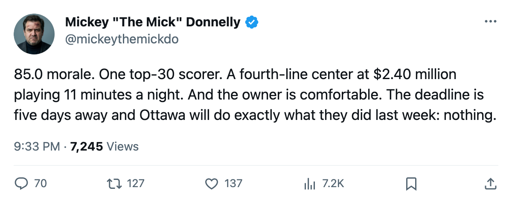
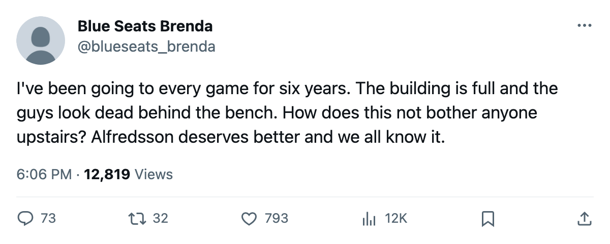

THE SADDEST ROOM IN HOCKEY MAKES ITS CENTER $2.40 MILLION AND BANKED $32.13 MILLION
Ottawa's club average morale is 85.0, last of 30. Daniel Alfredsson is the only Senator in the top 30 scorers. Five days to the deadline. The owner has no reason to move.
 Mickey "The Mick" DonnellyColumnist, ex-goalie · The Penalty Box
Mickey "The Mick" DonnellyColumnist, ex-goalie · The Penalty Box
 Ottawa Senators has the saddest locker room in hockey. The Bureau's Morale Scale puts the club average at 85.0, last of 30 clubs.
Ottawa Senators has the saddest locker room in hockey. The Bureau's Morale Scale puts the club average at 85.0, last of 30 clubs.  Buffalo Sabres is 86.6.
Buffalo Sabres is 86.6.  Calgary Flames and
Calgary Flames and  Philadelphia Flyers are 86.8. The Senators are 23-33-9, 65 points, and their owner banked $32.13 million.
Philadelphia Flyers are 86.8. The Senators are 23-33-9, 65 points, and their owner banked $32.13 million.
 Daniel Alfredsson86 is the only Ottawa man in the top 30 scorers in this league. 95 points, 70 games, 21.6 minutes a night, 84 overall. Nobody else in that room appears on the list.
Daniel Alfredsson86 is the only Ottawa man in the top 30 scorers in this league. 95 points, 70 games, 21.6 minutes a night, 84 overall. Nobody else in that room appears on the list.
 Bryan Smolinski76 is a center who plays 11.4 minutes a night at a 74 overall and makes $2.40 million. His morale is 74.
Bryan Smolinski76 is a center who plays 11.4 minutes a night at a 74 overall and makes $2.40 million. His morale is 74.  Peter Schaefer74 is a left winger at 11.1 minutes, 72 overall, $0.60 million, morale 74. Both sit in the bottom 15 of the Morale Scale. Ottawa has two of the fifteen saddest men in hockey and parks them at the bottom of the lineup at a club that cannot score.
Peter Schaefer74 is a left winger at 11.1 minutes, 72 overall, $0.60 million, morale 74. Both sit in the bottom 15 of the Morale Scale. Ottawa has two of the fifteen saddest men in hockey and parks them at the bottom of the lineup at a club that cannot score.
The payroll is $42.80 million. The revenue is $76.22 million. The profit is $32.13 million. The attendance is 14,749 at $80 a ticket. The building fills, the money comes in, and the room averages 85.0. Nobody in Ottawa has to change a single thing.
The deadline, what the calendar has as the trade deadline, is 5 days away. Ottawa has room on the payroll. They have a roster that needs a second scorer, a third line that means something, and a group of men who are not happy in there. What they do not have is a reason to move.
The record says what the room feels. 17-19 at home. 11-23 on the road. Only  Montreal Canadiens at 10-27 and Philadelphia Flyers at 10-24 travel worse in the East. In the division, they went 1-2-1 against
Montreal Canadiens at 10-27 and Philadelphia Flyers at 10-24 travel worse in the East. In the division, they went 1-2-1 against  Toronto Maple Leafs, 1-2-0 against
Toronto Maple Leafs, 1-2-0 against  Boston Bruins, 2-2-0 against Buffalo Sabres, and 3-0-0 against Montreal Canadiens. Four wins over the worst team in the division, two over everyone else.
Boston Bruins, 2-2-0 against Buffalo Sabres, and 3-0-0 against Montreal Canadiens. Four wins over the worst team in the division, two over everyone else.
Alfredsson plays 21.6 minutes a night. Smolinski plays 11.4 and makes $2.40 million to skate on a line that scares nobody. The owner makes $32.13 million to watch all of it.

